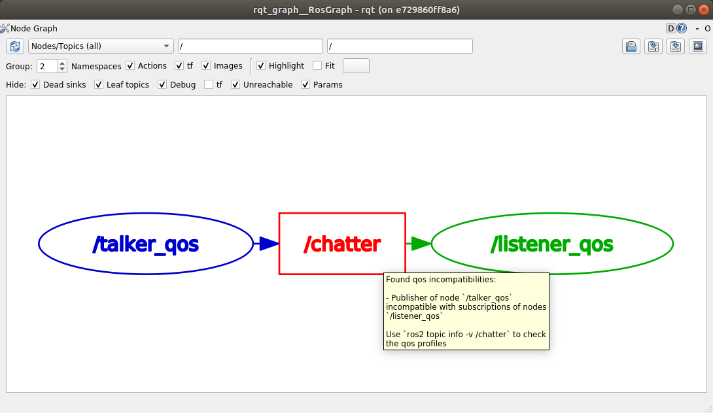

Galactic Geochelone（galactic） [14739]
目录 []
Galactic Geochelone 是ROS 2的第七个发布版本。以下是自上一个版本以来在Galactic Geochelone中的重要变化和功能亮点。要查看自Foxy以来的所有更改，请参阅`完整更新日志<Galactic-Geochelone-Complete-Changelog>`。 [14740]
支持的平台 [8234]
Galactic Geochelone主要支持以下平台： [14741]
一级平台： [14235]
二级平台： [14236]
RHEL 8：
amd64[14743]
Tier 3 平台： [14317]
这个ROS 2版本的新功能有： [14170]
能够指定每个记录器的日志级别 [14748]
现在可以在命令行上为不同的记录器指定不同的日志级别： [14749]
ros2 run demo_nodes_cpp talker --ros-args --log-level WARN --log-level talker:=DEBUG
上述命令将全局日志级别设置为WARN，但将talker节点消息的日志级别设置为DEBUG。``--log-level``命令行选项可以多次传递，以为每个记录器设置不同的日志级别。 [14750]
通过环境变量配置日志目录的能力 [14751]
现在可以通过两个环境变量来配置日志目录：ROS_LOG_DIR``和``ROS_HOME。逻辑如下： [14752]
如果``ROS_LOG_DIR``已设置且非空，则使用``$ROS_LOG_DIR``。 [14753]
否则，使用``$ROS_HOME/log``，如果未设置或为空，则使用``~/.ros``作为``ROS_HOME``。 [14754]
因此，默认值保持不变：~/.ros/log。 [14755]
相关PRs: ros2/rcl_logging#53 和 ros2/launch#460。 [14756]
例如： [14562]
ROS_LOG_DIR=/tmp/foo ros2 run demo_nodes_cpp talker
将所有日志放置在 /tmp/foo 中。 [14757]
ROS_HOME=/path/to/home ros2 run demo_nodes_cpp talker
将所有日志放置在 /path/to/home/log 中。 [14758]
可以在CMake之外调用 rosidl 管道的能力 [14759]
现在可以直接在CMake之外调用 rosidl 接口生成管道。源代码生成器和接口定义转换器可以通过统一的命令行界面访问。 [14760]
例如，假设在某个 demo 包中有一个 Demo 消息： [14761]
mkdir -p demo/msg
cd demo
cat << EOF > msg/Demo.msg
std_msgs/Header header
geometry_msgs/Twist twist
geometry_msgs/Accel accel
EOF
生成C、C++和Python支持源代码很容易： [14762]
rosidl generate -o gen -t c -t cpp -t py -I$(ros2 pkg prefix --share std_msgs)/.. \
-I$(ros2 pkg prefix --share geometry_msgs)/.. demo msg/Demo.msg
生成的源代码将放置在``gen``目录中。 [14763]
用户还可以将消息定义转换为不同格式，以供第三方代码生成工具使用： [14764]
rosidl translate -o gen --to idl -I$(ros2 pkg prefix --share std_msgs)/.. \
-I$(ros2 pkg prefix --share geometry_msgs)/.. demo msg/Demo.msg
转换后的消息定义将放置在``gen``目录中。 [14765]
请注意，这些工具只生成源代码，而不进行构建——这个责任仍由调用方承担。这是使``rosidl``接口生成在除CMake之外的构建系统中的第一步。有关更多参考和下一步，请参阅`设计文档<https://github.com/ros2/design/pull/310>`_。 [14766]
在启动时外部配置QoS [14767]
现在可以在节点启动时外部配置节点的 QoS 设置。QoS 设置**不能**在运行时进行配置，它们只能在启动时进行配置。节点作者必须选择启用在启动时更改 QoS 设置的功能。如果节点上启用了该功能，那么在节点首次启动时可以使用 ROS 参数设置 QoS 设置。 [14768]
C++和Python的演示可以在此处找到。 <https://github.com/ros2/demos/tree/a66f0e894841a5d751bce6ded4983acb780448cf/quality_of_service_demo#qos-overrides>`_ [14769]
请参阅 设计文档以获取更多详细信息。 [14770]
注意，使用注册的回调函数处理参数更改的用户代码应避免拒绝未知参数的更新。在Galactic之前，这被认为是不好的做法，但是在启用外部可配置 QoS 后，它将导致严重故障。 [14771]
相关 PR：ros2/rclcpp#1408 和 ros2/rclpy#635 [14772]
Python 的 point_cloud2 实用程序可用 [14773]
在Python中，已将用于与`PointCloud2消息<https://github.com/ros2/common_interfaces/blob/galactic/sensor_msgs/msg/PointCloud2.msg>`__进行交互的几个实用程序`移植到ROS 2<https://github.com/ros2/common_interfaces/pull/128>`__。这些实用程序允许从PointCloud2消息中获取点的列表（read_points``和``read_points_list），以及从点列表创建PointCloud2消息（create_cloud``和``create_cloud_xyz32）。 [14774]
创建PointCloud2消息并读取的示例： [14775]
import sensor_msgs_py.point_cloud2
from std_msgs.msg import Header
pointlist = [[0.0, 0.1, 0.2]]
pointcloud = sensor_msgs_py.point_cloud2.create_cloud_xyz32(Header(frame_id='frame'), pointlist)
for point in sensor_msgs_py.point_cloud2.read_points(pointcloud):
print(point)
RViz2时间面板 [14776]
已将Rviz2时间面板移植到RViz2<https://github.com/ros2/rviz/pull/599>。要启用时间面板，请点击“Panels -> Add New Panel”，然后选择“Time”。将出现如下所示的面板： [14777]

ros2 topic echo可以打印序列化数据 [14778]
在调试中间件问题时，查看RMW发送的原始序列化数据可能很有用。已向``ros2 topic echo``添加了``--raw``命令行标志<https://github.com/ros2/ros2cli/pull/470>，用于显示这些数据。要查看实际效果，请运行以下命令。 [14779]
终端1： [14780]
$ ros2 topic pub /chatter std_msgs/msg/String "data: 'hello'"
终端2： [14781]
$ ros2 topic echo --raw /chatter
b'\x00\x01\x00\x00\x06\x00\x00\x00hello\x00\x00\x00'
---
获取消息的YAML表示 [14782]
现在可以使用 to_yaml 函数在C++中获取所有消息的YAML表示。以下是打印YAML表示的示例代码： [14783]
#include <cstdio>
#include <std_msgs/msg/string.hpp>
int main()
{
std_msgs::msg::String msg;
msg.data = "hello world";
printf("%s", rosidl_generator_traits::to_yaml(msg).c_str());
return 0;
}
通过ros2命令在运行时加载参数文件的能力 [14784]
ROS 2长期以来已经能够在启动时指定参数值（通过命令行参数或YAML文件），并能够将当前参数转储到文件中（通过``ros2 param dump``）。Galactic版本增加了使用``ros2 param load``命令从YAML文件中在运行时加载参数值的能力。例如： [14785]
终端1： [14780]
$ ros2 run demo_nodes_cpp parameter_blackboard
终端2： [14781]
$ ros2 param set /parameter_blackboard foo bar # sets 'foo' parameter to value 'bar'
$ ros2 param dump /parameter_blackboard # dumps current value of parameters to ./parameter_blackboard.yaml
$ ros2 param set /parameter_blackboard foo different # sets 'foo' parameter to value 'different'
$ ros2 param load /parameter_blackboard ./parameter_blackboard.yaml # reloads previous state of parameters, 'foo' is back to 'bar'
检查QoS不兼容性的工具 [14786]
基于新的QoS兼容性检查API，``ros2doctor``和``rqt_graph``现在可以检测和报告发布者和订阅者之间的QoS不兼容性。 [14787]
给定一个具有`不兼容QoS设置 <../../Concepts/About-Quality-of-Service-Settings>`的发布者和订阅者： [14788]
终端1： [14780]
$ ros2 run demo_nodes_py talker_qos -n 1000 # i.e. best_effort publisher
终端2： [14781]
$ ros2 run demo_nodes_py listener_qos --reliable -n 1000 # i.e. reliable subscription
$ ros2 doctor --report
# ...
QOS COMPATIBILITY LIST
topic [type] : /chatter [std_msgs/msg/String]
publisher node : talker_qos
subscriber node : listener_qos
compatibility status : ERROR: Best effort publisher and reliable subscription;
# ...
而``rqt_graph``显示如下： [14790]
相关PR：ros2/ros2cli#621，ros-visualization/rqt_graph#61 [14791]
在参数文件中使用启动替换 [14792]
与ROS 1中的``roslaunch``中的``rosparam``标签类似，``launch_ros``现在可以在参数文件中评估替换。 [14793]
例如，给定如下的``parameter_file_with_substitutions.yaml``： [14794]
/**:
ros__parameters:
launch_date: $(command date)
将``allow_substs``设置为``True``，以便在``Node``启动时评估替换： [14795]
import launch
import launch_ros.parameter_descriptions
import launch_ros.actions
def generate_launch_description():
return launch.LaunchDescription([
launch_ros.actions.Node(
package='demo_nodes_cpp',
executable='parameter_blackboard',
parameters=[
launch_ros.parameter_descriptions.ParameterFile(
param_file='parameter_file_with_substitutions.yaml',
allow_substs=True)
]
)
])
XML启动文件也支持这一功能。 [14796]
<launch>
<node pkg="demo_nodes_cpp" exec="parameter_blackboard">
<param from="parameter_file_with_substitutions.yaml" allow_substs="true"/>
</node>
</launch>
支持唯一的网络流量 [14798]
现在应用程序可能需要UDP/TCP和基于IP的RMW实现为发布者和订阅者提供唯一的“网络流量”（即在IP数据包头中具有唯一的“区分服务代码点 <https://tools.ietf.org/html/rfc2474>`_和/或唯一的`IPv6流标签 <https://tools.ietf.org/html/rfc6437>`_和/或唯一的端口），从而在支持此功能的网络架构（如5G网络）中为这些IP流量启用QoS规范。 [14799]
要查看实际效果，您可以运行以下C++示例（可以在`ros2/examples <https://github.com/ros2/examples>`__存储库中找到）： [14800]
终端1： [14780]
ros2 run examples_rclcpp_minimal_publisher publisher_member_function_with_unique_network_flow_endpoints
终端2： [14781]
ros2 run examples_rclcpp_minimal_subscriber subscriber_member_function_with_unique_network_flow_endpoints
请参考`唯一网络流量设计文档 <https://github.com/ros2/design/pull/304>`_ 获取进一步的参考。 [14801]
Rosbag2新功能 [14802]
按时间划分录制 [14803]
在Foxy版本中，您只能按照包的大小进行分割包，现在您还可以按照经过的时间进行分割。以下命令将把包文件分割为100秒的块。 [14804]
ros2 bag record --all --max-bag-duration 100
ros2 bag list [14805]
这个新命令列出了rosbag2使用的各种类型的已安装插件。 [14806]
$ ros2 bag list storage
rosbag2_v2
sqlite3
$ ros2 bag list converter
rosbag_v2_converter
压缩实现是一个插件。 [14807]
在Foxy版本中，rosbag2的压缩是使用一个硬编码的Zstd库实现的。现在进行了重新架构，使得压缩实现成为一个插件，可以在不修改核心rosbag2代码库的情况下进行替换。随``ros-galactic-rosbag2``一起提供的默认插件仍然是Zstd插件，但现在可以发布和使用更多插件，并通过选择性安装包来排除Zstd插件。 [14808]
按消息进行压缩。 [14809]
在Foxy中，您可以在拆分rosbag文件时自动压缩每个文件（每个文件的压缩），但现在您还可以指定每个消息的压缩。 [14810]
ros2 bag record --all --compression-format zstd --compression-mode message
Rosbag2 Python API [14811]
在Galactic中发布了一个新的包“rosbag2_py”，提供了Python API。该包是围绕C++ API的“pybind11”绑定。在最初的Galactic版本中，它尚未暴露通过“rosbag2_cpp” API可用的所有功能，但它是“ros2 bag” CLI工具的唯一连接，因此提供了相当多的功能。 [14812]
性能测试包和性能改进 [14813]
自Foxy发布以来，对rosbag2进行了全面的性能分析项目。完整的初始报告可在https://github.com/ros2/rosbag2/blob/galactic/rosbag2_performance/rosbag2_performance_benchmarking/docs/rosbag2_performance_improvements.pdf中找到。包“rosbag2_performance_benchmarking”提供了运行性能分析的工具，特别是在记录方面，这有助于我们维护和改进rosbag2的性能。 [14814]
根据此报告，我们进行了关键工作，以将性能改进到更适用于实际机器人工作流程的状态。以一个关键指标为例 - 在高带宽压力测试（200Mbps）中，Foxy版本丢失了高达70％的消息，而Galactic版本保留了近100％。有关详细信息，请参阅链接的报告。 [14815]
--regex 和 --exclude 选项用于选择话题 [14816]
新的录制选项 --regex 和 --exclude 允许对录制的包中的话题进行精细调整，无需明确列出所有话题。这些选项可以一起或分别使用，并且可以与 --all 一起使用。 [14817]
下面的命令将只记录名称中包含“scan”的话题。 [14818]
ros2 bag record --regex "*scan*"
下面的命令将记录除 /my_namespace/ 之外的所有话题。 [14819]
ros2 bag record --all --exclude "/my_namespace/*"
ros2 bag reindex [14820]
ROS 2的包由一个目录表示，而不是单个文件。该目录包含一个 metadata.yaml 文件和一个或多个包文件。当 metadata.yaml 文件丢失或缺失时，ros2 bag reindex $bag_dir 将尝试通过读取目录中的所有包文件来重建它。 [14821]
播放时间控制 [14822]
为rosbag2的播放功能增加了新的控制选项-暂停和恢复、改变速率以及播放下一条。从Galactic版本开始，这些控制选项仅作为rosbag2播放器节点上的服务公开。目前正在进行的开发工作是将它们暴露给``ros2 bag play``中的键盘控制，但在此之前，用户可以简单地实现一个带有按钮或键盘控制的用户应用程序来调用这些服务。 [14823]
# In one shell
$ ros2 bag play my_bag
# In another shell
$ ros2 service list -t
/rosbag2_player/get_rate [rosbag2_interfaces/srv/GetRate]
/rosbag2_player/is_paused [rosbag2_interfaces/srv/IsPaused]
/rosbag2_player/pause [rosbag2_interfaces/srv/Pause]
/rosbag2_player/play_next [rosbag2_interfaces/srv/PlayNext]
/rosbag2_player/resume [rosbag2_interfaces/srv/Resume]
/rosbag2_player/set_rate [rosbag2_interfaces/srv/SetRate]
/rosbag2_player/toggle_paused [rosbag2_interfaces/srv/TogglePaused]
# Check if playback is paused
$ ros2 service call /rosbag2_player/is_paused rosbag2_interfaces/IsPaused
# Pause playback
$ ros2 service call /rosbag2_player/pause rosbag2_interfaces/Pause
# Resume playback
$ ros2 service call /rosbag2_player/resume rosbag2_interfaces/Resume
# Change the paused state of playback to its opposite. If playing, pauses. If paused, resumes.
$ ros2 service call /rosbag2_player/toggle_paused rosbag2_interfaces/TogglePaused
# Get the current playback rate
$ ros2 service call /rosbag2_player/get_rate
# Set the current playback rate (must be > 0)
$ ros2 service call /rosbag2_player/set_rate rosbag2_interfaces/SetRate "rate: 0.1"
# Play a single next message (only works while paused)
$ ros2 service call /rosbag2_player/play_next rosbag2_interfaces/PlayNext
自Foxy版本以来的更改 [14826]
默认的RMW更改为Eclipse Cyclone DDS [14827]
在银河开发过程中，ROS 2技术指导委员会 投票决定 将默认的ROS中间件（RMW）更改为`Eclipse Cyclone DDS <https://github.com/eclipse-cyclonedds/cyclonedds>`__项目，该项目属于`Eclipse Foundation <https://www.eclipse.org>`__。在不进行任何配置更改的情况下，默认情况下用户将使用Eclipse Cyclone DDS。Fast DDS和Connext仍然是一级支持的RMW供应商，用户可以通过使用``RMW_IMPLEMENTATION``环境变量自行选择是否使用其中之一的RMW。有关更多信息，请参阅`多个RMW实现指南 <../../How-To-Guides/Working-with-multiple-RMW-implementations>`__。 [14828]
Connext RMW更改为rmw_connextdds [14829]
在银河版本中合并了一个名为`rmw_connextdds <https://github.com/ros2/rmw_connextdds>`_的新RMW。这个RMW具有更好的性能，并修复了旧的RMW ``rmw_connext_cpp``存在的许多问题。 [14830]
测试和整体质量有大幅改进 [14831]
银河版本包含许多改变，解决了竞态条件、内存泄漏和用户报告的问题。除了这些改变之外，在银河开发期间，通过实施`REP 2004 <https://www.ros.org/reps/rep-2004.html>`__ 来改善系统的整体质量。通过以下方式，将``rclcpp``软件包及其依赖项（其中包括大部分ROS 2非Python核心软件包）提升到`质量等级1 <https://www.ros.org/reps/rep-2004.html#quality-level-1>`__： [14832]
ament_cmake [14354]
tf2_ros的Python代码已从tf2_ros中分离出来，成为一个名为tf2_ros_py的独立软件包。任何依赖于tf2_ros的现有Python代码将继续工作，但这些软件包的package.xml应该被修改为``exec_depend``依赖于tf2_ros_py。 [14856]
以前存放在tf2_ros中的Python代码已移至名为tf2_ros_py的独立包中。任何依赖于tf2_ros的现有Python代码都将继续工作，但这些包的package.xml应该修改为``exec_depend`` tf2_ros_py。 [14857]
tf2_ros的Python TransformListener使用全局命名空间。 [14858]
Python TransformListener 现在在全局命名空间中订阅 /tf 和 /tf_static。以前，它在节点的命名空间中进行订阅。这意味着节点的命名空间将不再影响 /tf 和 /tf_static 的订阅。 [14859]
例如： [14562]
ros2 run tf2_ros tf2_echo --ros-args -r __ns:=/test -- odom base_link
将订阅 /tf 和 /tf_static，可以通过``ros2 topic list``查看。 [14860]
rclcpp [14358]
spin_until_future_complete模板参数的更改。 [14862]
Executor::spin_until_future_complete``的第一个模板参数是未来的结果类型``ResultT，该方法只接受``std::shared_future<ResultT>``。为了接受其他类型的未来对象（例如：std::future），该参数已更改为未来对象类型本身。 [14863]
在依赖模板参数推导的``spin_until_future_complete``调用的地方，不需要更改。否则，以下是一个示例差异： [14864]
std::shared_future<MyResultT> future;
...
-executor.spin_until_future_complete<MyResultT>(future);
+executor.spin_until_future_complete<std::shared_future<MyResultT>>(future);
有关详细信息，请参见`ros2/rclcpp#1160 <https://github.com/ros2/rclcpp/pull/1160>`_。有关用户代码中所需更改的示例，请参见`ros-visualization/interactive_markers#72 <https://github.com/ros-visualization/interactive_markers/pull/72>`_。 [14865]
更改默认的``/clock``订阅 QoS 配置文件 [14866]
默认配置从可靠通信（历史深度为10）更改为尽力通信（历史深度为1）。请参见`ros2/rclcpp#1312 <https://github.com/ros2/rclcpp/pull/1312>`_。 [14867]
可等待 API [14868]
已修改 Waitable API 以避免与“MultiThreadedExecutor”出现问题。这只会影响实现自定义等待的用户。有关详细信息，请参阅 ros2/rclcpp#1241。 [14869]
rclcpp 的日志宏发生了变化 [14870]
以前，日志宏容易受到 格式字符串攻击 的影响，其中格式字符串被评估并且有可能执行代码、读取堆栈或导致运行程序中的分段错误。为了解决这个安全问题，日志宏现在仅接受字符串字面值作为其格式字符串参数。 [14871]
如果以前的代码如下所示： [14872]
const char *my_const_char_string format = "Foo";
RCLCPP_DEBUG(get_logger(), my_const_char_string);
现在应将其替换为： [14873]
const char *my_const_char_string format = "Foo";
RCLCPP_DEBUG(get_logger(), "%s", my_const_char_string);
或： [14874]
RCLCPP_DEBUG(get_logger(), "Foo");
这个更改从日志宏中移除了一些便利性，因为``std::string``不再被接受作为格式参数。 [14875]
如果你之前的代码没有格式参数，例如： [14876]
std::string my_std_string = "Foo";
RCLCPP_DEBUG(get_logger(), my_std_string);
现在应将其替换为： [14873]
std::string my_std_string = "Foo";
RCLCPP_DEBUG(get_logger(), "%s", my_std_string.c_str());
注解
如果你正在使用``std::string``作为带有格式参数的格式字符串，将该字符串转换为``char *``并将其用作格式字符串将会产生格式安全警告。这是因为编译器在编译时无法深入了解``std::string``以验证参数。为避免安全警告，我们建议您手动构建字符串，并像前面的示例那样不带格式参数传递。 [14877]
``std::stringstream``类型仍然可以作为流日志宏的参数接受。详见 ros2/rclcpp#1442 获取更多详细信息。 [14878]
参数类型现在默认为静态 [14879]
以前，当设置参数时，参数的类型可以更改。例如，如果将参数声明为整数，后续对参数的设置可以将其类型更改为字符串。这种行为可能导致错误，并且很少是用户想要的。从Galactic开始，默认情况下参数类型是静态的，尝试更改类型将失败。如果需要先前的动态行为，可以选择将其加入（参见下面的代码）。 [14880]
// declare integer parameter with default value, trying to set it to a different type will fail.
node->declare_parameter("my_int", 5);
// declare string parameter with no default and mandatory user provided override.
// i.e. the user must pass a parameter file setting it or a command line rule -p <param_name>:=<value>
node->declare_parameter("string_mandatory_override", rclcpp::PARAMETER_STRING);
// Conditionally declare a floating point parameter with a mandatory override.
// Useful when the parameter is only needed depending on other conditions and no default is reasonable.
if (mode == "modeA") {
node->declare_parameter("conditionally_declare_double_parameter", rclcpp::PARAMETER_DOUBLE);
}
// You can also get the old dynamic typing behavior if you want:
rcl_interfaces::msg::ParameterDescriptor descriptor;
descriptor.dynamic_typing = true;
node->declare_parameter("dynamically_typed_param", rclcpp::ParameterValue{}, descriptor);
更多详细信息请参见 https://github.com/ros2/rclcpp/blob/galactic/rclcpp/doc/notes_on_statically_typed_parameters.md。 [14881]
新的 API 用于检查 QoS 配置文件的兼容性 [14844]
qos_check_compatible 是一个用于检查两个 QoS 配置文件兼容性的新函数。 [14882]
相关 PR：ros2/rclcpp#1554 [14883]
rclpy [14405]
删除了废弃的 Node.set_parameters_callback 函数。 [14884]
方法 Node.set_parameters_callback 在 ROS Foxy 中被声明为`废弃 <https://github.com/ros2/rclpy/pull/504>`_，并在 ROS Galactic 中被`移除 <https://github.com/ros2/rclpy/pull/633>`_。请改用 Node.add_on_set_parameters_callback()。以下是一些使用它的示例代码。 [14885]
import rclpy
import rclpy.node
from rcl_interfaces.msg import ParameterType
from rcl_interfaces.msg import SetParametersResult
rclpy.init()
node = rclpy.node.Node('callback_example')
node.declare_parameter('my_param', 'initial value')
def on_parameter_event(parameter_list):
for parameter in parameter_list:
node.get_logger().info(f'Got {parameter.name}={parameter.value}')
return SetParametersResult(successful=True)
node.add_on_set_parameters_callback(on_parameter_event)
rclpy.spin(node)
运行此命令以查看参数回调的实际效果。 [14886]
ros2 param set /callback_example my_param "Hello World"
参数类型现在默认为静态 [14879]
在Foxy版本及之前，调用设置参数的函数可能会改变参数的类型。从Galactic版本开始，参数类型是静态的，不能默认更改。如果需要保留之前的行为，请在参数描述符中设置``dynamic_typing``为true。以下是一个示例。 [14887]
import rclpy
import rclpy.node
from rcl_interfaces.msg import ParameterDescriptor
rclpy.init()
node = rclpy.node.Node('static_param_example')
node.declare_parameter('static_param', 'initial value')
node.declare_parameter('dynamic_param', 'initial value', descriptor=ParameterDescriptor(dynamic_typing=True))
rclpy.spin(node)
运行以下命令以查看静态类型和动态类型参数的区别。 [14888]
$ ros2 param set /static_param_example dynamic_param 42
Set parameter successful
$ ros2 param set /static_param_example static_param 42
Setting parameter failed: Wrong parameter type, expected 'Type.STRING' got 'Type.INTEGER'
更多详细信息请参见 https://github.com/ros2/rclcpp/blob/galactic/rclcpp/doc/notes_on_statically_typed_parameters.md。 [14881]
新的 API 用于检查 QoS 配置文件的兼容性 [14844]
``rclpy.qos.qos_check_compatible``是一个用于检查两个QoS配置文件兼容性的`新函数<https://github.com/ros2/rclpy/pull/708>`_。如果配置文件兼容，则使用它们的发布者和订阅者可以进行通信。 [14889]
import rclpy.qos
publisher_profile = rclpy.qos.qos_profile_sensor_data
subscription_profile = rclpy.qos.qos_profile_parameter_events
print(rclpy.qos.qos_check_compatible(publisher_profile, subscription_profile))
$ python3 qos_check_compatible_example.py
(QoSCompatibility.ERROR, 'ERROR: Best effort publisher and reliable subscription;')
rclcpp_action [14665]
动作客户端目标响应回调的签名已更改。 [14890]
目标响应回调现在应接受一个目标句柄的共享指针，而不是一个future对象。 [14891]
例如`（参见<https://github.com/ros2/examples/pull/291>`_），旧的签名为： [14892]
void goal_response_callback(std::shared_future<GoalHandleFibonacci::SharedPtr> future)
新签名: [14893]
void goal_response_callback(GoalHandleFibonacci::SharedPtr goal_handle)
相关 PR: ros2/rclcpp#1311 [14894]
rosidl_typesupport_introspection_c [14895]
从数组中获取元素的函数发生了 API 破坏 [14896]
由于与从数组或序列中获取元素的其他所有函数在语义上有所不同，函数的签名发生了更改。这仅影响使用内省类型支持的 rmw 实现的作者。 [14897]
详细信息请参阅 ros2/rosidl#531。 [14898]
rcl_lifecycle 和 rclcpp_lifecycle [14899]
RCL 的生命周期状态机新增了初始化 API [14900]
rcl_lifecycle 中的生命周期状态机已被修改，以期望一个新引入的选项结构，该结构合并了状态机的通用配置。该选项结构允许指示是否使用默认值初始化状态机，其附加的服务是否处于活动状态，以及要使用的分配器。 [14901]
rcl_ret_t
rcl_lifecycle_state_machine_init(
rcl_lifecycle_state_machine_t * state_machine,
rcl_node_t * node_handle,
const rosidl_message_type_support_t * ts_pub_notify,
const rosidl_service_type_support_t * ts_srv_change_state,
const rosidl_service_type_support_t * ts_srv_get_state,
const rosidl_service_type_support_t * ts_srv_get_available_states,
const rosidl_service_type_support_t * ts_srv_get_available_transitions,
const rosidl_service_type_support_t * ts_srv_get_transition_graph,
const rcl_lifecycle_state_machine_options_t * state_machine_options);
RCL 的生命周期状态机存储分配器实例 [14902]
上述的选项结构包含用于初始化状态机的分配器实例。该选项结构以及其中的分配器被存储在生命周期状态机内。因此，“rcl_lifecycle_fini”函数在其结束函数中不再需要一个分配器，而是使用在选项结构中设置的分配器来释放其内部数据结构。 [14903]
rcl_ret_t
rcl_lifecycle_state_machine_fini(
rcl_lifecycle_state_machine_t * state_machine,
rcl_node_t * node_handle);
RCLCPP 的生命周期节点提供了选项来不实例化服务 [14904]
为了在不暴露内部服务（如``change_state``、``get_state``等）的情况下使用rclcpp的生命周期节点，生命周期节点的构造函数引入了一个新的参数，指示服务是否可用。默认情况下，这个布尔标志设置为true，如果不需要任何更改，则不需要对现有API进行任何更改。 [14905]
explicit LifecycleNode(
const std::string & node_name,
const rclcpp::NodeOptions & options = rclcpp::NodeOptions(),
bool enable_communication_interface = true);
相关PRs：ros2/rcl#882 <https://github.com/ros2/rcl/pull/882>`_和`ros2/rclcpp#1507 [14906]
已知问题 [14201]
ros2cli [14550]
守护程序减慢了Windows上的CLI [14908]
作为解决方法，可以在没有守护程序的情况下使用CLI命令，例如： [14909]
ros2 topic list --no-daemon
该问题由`ros2/ros2cli#637 <https://github.com/ros2/ros2cli/issues/637>`_跟踪。 [14910]
发布前的时间线 [14487]
- 2021年3月22日，星期一 - Alpha版本 [14919]
- 2021年4月5日，星期一 - 冻结版本 [14921]
对Rolling Ridley中的ROS核心 1 包进行API和功能冻结。请注意，这包括``rmw``，它是``ros_core``的递归依赖项。在此点之后，只能进行错误修复版本的发布。新包可以独立发布。 [14922]
- 周一，2021年4月19日 - 分支 [14923]
从Rolling Ridley分支。``rosdistro``已重新开放用于ROS Core [1]_软件包的Rolling PRs。Galactic开发从``ros-rolling-*``软件包转移到``ros-galactic-*``软件包。 [14924]
- 周一，2021年4月26日 - Beta [14925]
可用的ROS Desktop [2]_软件包的更新版本。请求进行常规测试。 [14926]
- 周一，2021年5月17日 - RC [14927]
- 2021年5月20日，发行版冻结 [14930]
冻结rosdistro。不会合并Galactic的``rosdistro``存储库上的PR（发布公告后重新开放）。 [14931]
- 2021年5月23日，正式发布 [14932]
- 1(1,2,3)
ros_core变体在 REP 2001 (ros-core) 中有详细描述。 [14935]- 2(1,2)
desktop变体在 REP 2001 (desktop-variants) 中有详细描述。 [14936]